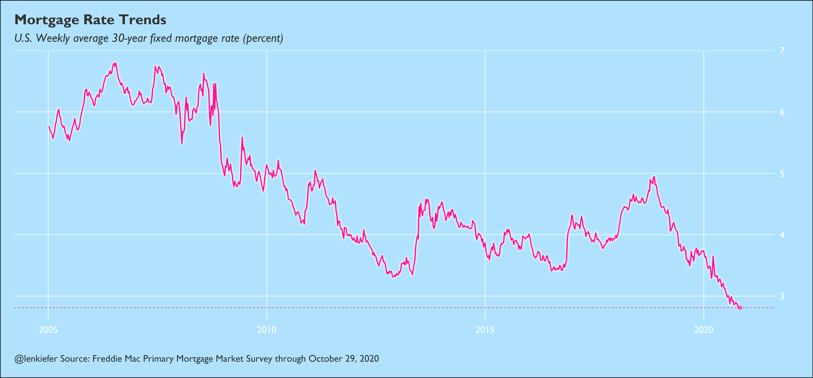
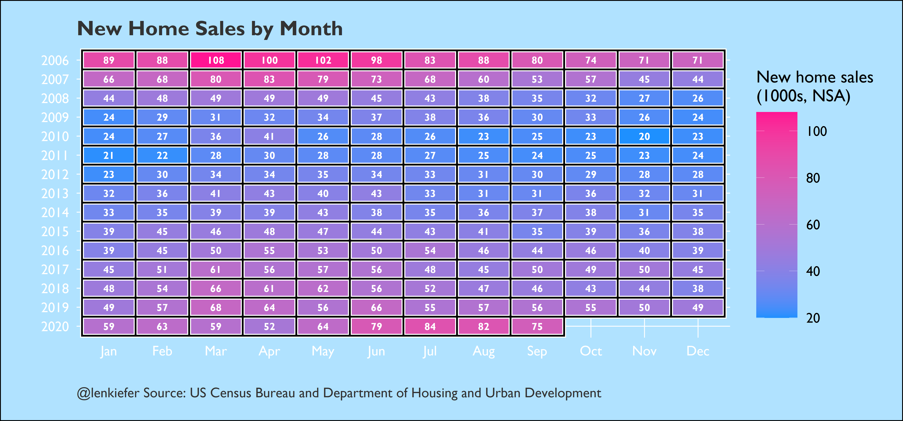
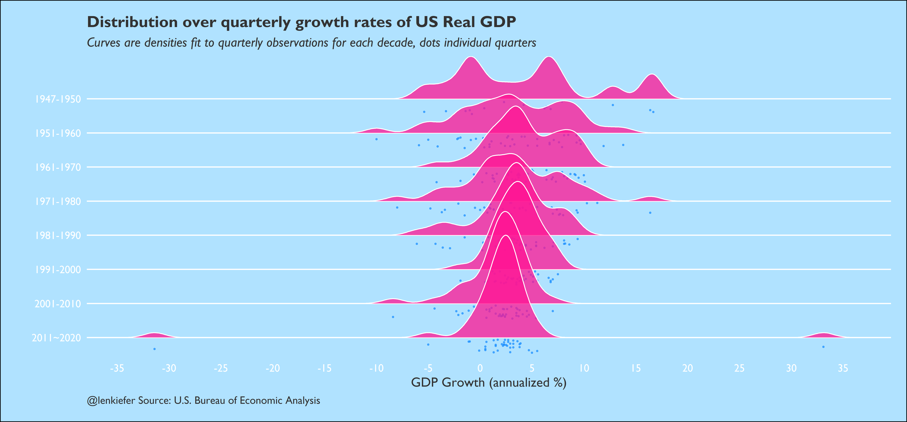
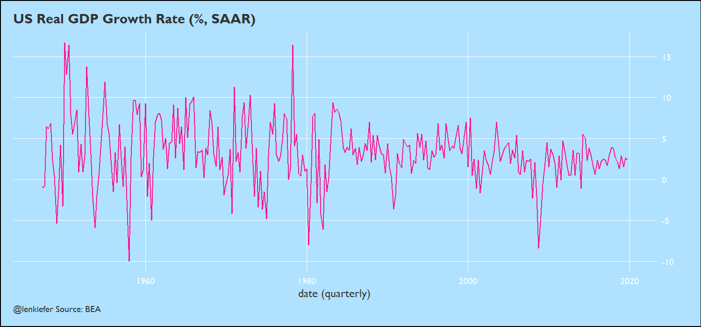

Yesterday I shared with you observations on the economy, which form the core of many of my recent economic outlook talks. In that article I used some charts with alternative formatting. No not spooky, but a blue theme kind of like those alternative road uniforms some sportsball teams wear.
Here, I will share with you the R code for these delicious plots.
Setup
First we’ll need to set up our chart theme, tweak some ggplot2 defaults and load some libraries.
##############################################################
# load libraries ----
##############################################################
library(tidyverse)
library(lubridate)
library(ggridges)
library(fredr)
library(extrafont)
extrafont::loadfonts(device="win")Chart theme
We’ll also need to set up a custom ggplot2 theme. I’m building off of theme_minimal(). I pass parameters to theme_miniaml via ... which will allow me to change the theme font or make other adjustments.
For this chart theme, I chose a background lightskyblue1, with white grid lines and gray20 text. I also will change the font to Gill Sans MT and I’ll also override the default ggplot2 line and rect color/fill parameters as deeppink.
R code for chart theme
##############################################################
# set up theme ----
##############################################################
theme_len <- function(...){
theme_minimal(...)+
theme(legend.position="top",
panel.grid.minor=element_blank(),
panel.grid.major=element_line(color="white"),
plot.title=element_text(face="bold",color="gray20"),
plot.subtitle=element_text(face="italic",color="gray20"),
plot.caption=element_text(hjust=0,color="gray20"),
legend.direction="horizontal",
axis.text=element_text(color="white"),
axis.title=element_text(color="gray20"),
plot.backgroun=element_rect(fill="lightskyblue1"),
panel.border=element_rect(fill=NA,color=NA),
plot.margin=margin(1,1,1,1,"cm"),
legend.key.width=unit(2,"cm")
)
}
##############################################################
# update default ggplot2 line, rect colors/fill ----
##############################################################
update_geom_defaults("line",list(colour="deeppink"))
update_geom_defaults("rect",list(fill="deeppink",colour="deeppink"))Now we can load data and make some plots.
Get data
I’m going to use data from FRED. You’ll need to set up your API key as I described in my post Visualizing consumer price inflation and mortgage rates
Mortgage rate line chart
For the line chart I added an additional embellishment. I added a thicker second, third, and fourth lines with white color and decreasing transparency. This helps the line stand out from the background.
R code for mortgage rate plot
##############################################################
# set up fredr and load data ----
##############################################################
fredr_set_key("YOUR_API_KEY_FROM_FRED")
# load data
df <-
fredr(series_id = "MORTGAGE30US",
observation_start = as.Date("1971-04-01")
)
##############################################################
# line plot ----
##############################################################
ggplot(data=filter(dfm,date>="2005-01-01"), aes(x=date,y=value))+
geom_line(size=2,color="white",alpha=0.75)+
geom_line(size=4,color="white",alpha=0.25)+
geom_line(size=5,color="white",alpha=0.1)+
geom_line(size=1.3)+
theme_len(base_family="Gill Sans MT",base_size=24,base_line_size=0.65)+
scale_y_continuous(position="right")+
geom_point(data=.%>% tail(1),size=4,alpha=0.5,color="deeppink")+
geom_hline(data=.%>% tail(1),linetype=2,aes(yintercept=value),alpha=1,color="deeppink")+
labs(x="",y="",subtitle="U.S. Weekly average 30-year fixed mortgage rate (percent)",
title="Mortgage Rate Trends",
caption="@lenkiefer Source: Freddie Mac Primary Mortgage Market Survey through October 29, 2020")
New home sales
R code for new home sales plot
##############################################################
# load data ----
##############################################################
df_nhs <-
fredr(series_id = "HSN1FNSA",
observation_start = as.Date("2000-01-01")
)
df_nhs <- mutate(df_nhs, yearf=fct_reorder(factor(year(date)), -year(date)),
mname=factor(month.abb[month(date)],levels=month.abb))
##############################################################
# tile plot ----
##############################################################
ggplot(data=filter(df_nhs,year(date)>2005), aes(x=mname,y=yearf, fill=value,label=value))+
geom_tile()+
geom_tile(color="white",size=2.5)+
geom_tile(color="black",size=1.2,fill=NA)+
geom_text(color="white",family="Gill Sans MT",fontface="bold",size=5)+
scale_fill_gradient(name="New home sales\n(1000s, NSA) ",low="dodgerblue",high="deeppink")+
theme_len(base_family="Gill Sans MT",base_size=24,base_line_size=0.65)+
theme(legend.position="right",legend.direction="vertical",
legend.key.height=unit(2,"cm"))+
labs(x="",y="",title="New Home Sales by Month",
caption='@lenkiefer Source: US Census Bureau and Department of Housing and Urban Development')
GDP density plot
Finally here’s a power blue remix of my Chart Style 1979 plot for US Real GDP growth.
R code for GDP plot
##############################################################
# load data ----
##############################################################
d <-
fredr(series_id = "A191RL1Q225SBEA",
observation_start = as.Date("1940-01-01")) %>%
# rename value as price
rename(price = value)
d <- mutate(d, decade=case_when(year(date)<1951~"1947-1950",
year(date)<1961~"1951-1960",
year(date)<1971~"1961-1970",
year(date)<1981~"1971-1980",
year(date)<1991~"1981-1990",
year(date)<2001~"1991-2000",
year(date)<2011~"2001-2010",
T ~"2011~2020"
))
##############################################################
# density ----
##############################################################
ggplot(data=d, aes(x=price,y=fct_reorder(decade,-year(date))))+
geom_density_ridges(color="white",fill="deeppink",bandwidth=1,
point_color="dodgerblue",
jittered_points=TRUE,position="raincloud",alpha=0.75,size=0.85,scale=3
)+
scale_x_continuous(breaks=seq(-50,50,5))+
theme_len(base_family="Gill Sans MT",base_size=24)+
theme(panel.grid.major.x=element_blank())+
labs(x="GDP Growth (annualized %)",
y="",
caption="@lenkiefer Source: U.S. Bureau of Economic Analysis",
title="Distribution over quarterly growth rates of US Real GDP",
subtitle="Curves are densities fit to quarterly observations for each decade, dots individual quarters")
Just for fun, and all of this is fun right?, we can animate a time series to show how extreme the recent GDP growth has been. The y axis in a normal chart might get broken, but we can add an elastic axis with gganimate::view_follow.
R code for animation
# need gganimate for the animation
library(gganimate)
##############################################################
# density ----
##############################################################
d <-
d %>%
mutate(id=row_number()) %>%
mutate(did=case_when(year(date)<2020~0,
T~250)) %>%
mutate(ind2=cumsum(did))
a <-
ggplot(data=d, aes(x=date,y=price))+geom_line(size=1.05)+
geom_point(data= .%>% filter(date>="2020-01-01"),size=4,alpha=0.25,color="deeppink")+
theme_len(base_family="Gill Sans MT",base_size=24,base_line_size=0.65)+
scale_y_continuous(position="right",breaks=seq(-100,100,5))+
transition_reveal(ind2)+view_follow()+
labs(x="date (quarterly)",y="",title="US Real GDP Growth Rate (%, SAAR)",
caption="@lenkiefer Source: BEA")
animate(a,end_pause=10,height=700,width=1500)
It might be a little much to have this theme all the time, but it can be a nice alternative. Plus, it might help my jersey sales.